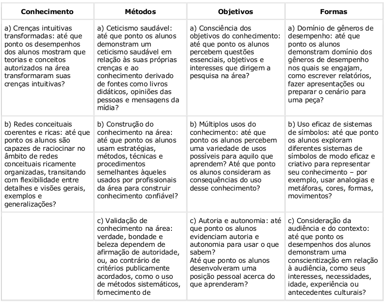

O que é a compreensão?
O que é a compreensão?
capacidade de pensar e agir de maneira flexível com o que se sabe.
Compreensão de um tópico "Capacidade de desempenho flexível" com ênfase na flexibilidade.
Ao mudar o foco para a compreensão, o que muda para os professores?
Ao dirigir o foco para a compreensão, faz-se necessário que os professores procedam de forma sensata ao selecionar conteúdos, tenham clareza com relação aos seus objetivos ou metas e integrem a avaliação ao ensino-aprendizagem.
Qualquer formulação de Ensino para a Compreensão (EpC) deve vencer quatro desafios:
Assegurar uma educação de boa qualidade para todos;
Planejar currículos que correspondam a padrões de qualidade e que respondam às necessidades individuais de professores e alunos;
Produzir evidências de aprendizagem, de modo que professores e alunos sejam responsáveis pelo seu trabalho;
Estimular a busca pela compreensão como meta educacional central.
O que é ensino para a compreensão?
O que é ensino para a compreensão?
Um marco conceitual guia
Aborda as seguintes questões-chave:
Que tópicos valem a pena compreender?
Tópicos geradores
O que os alunos precisam compreender com eles?
Metas de compreensão
Como podemos estimular a compreensão?
Desempenhos de compreensão
Como podemos saber o que os alunos compreendem?
Avaliação contínua
Aborda as seguintes questões-chave:
Que tópicos valem a pena compreender?
Tópicos geradores
O que os alunos precisam compreender com eles?
Metas de compreensão
Como podemos estimular a compreensão?
Desempenhos de compreensão
Como podemos saber o que os alunos compreendem?
Avaliação contínua
Um tópico pode ser considerado gerador quando é:
Central ao domínio da disciplina. Engaja os alunos no desenvolvimento de compreensões que proporcionam uma base para atividades mais complexas no domínio da disciplina.
Acessível e interessante para os alunos. Estão relacionados às experiências dos alunos, varia conforme idade, contexto social e cultural, interesses pessoais e formação intelectual dos alunos.
Acessível e interessante para os alunos. Interessante para o professor. Estimula as paixões intelectuais do professor e servem de modelo de engajamento para os alunos.
Relacionável. É facilmente relacionado a outros tópicos, inclusive fora do domínio específico. A investigação geralmente conduz a questões mais profundas.
Metas de compreensão
Definem explicitamente o que se espera que os alunos venham a compreender, ou seja, definem mais especificamente as idéias, os processos, as relações ou questões que os alunos compreenderão melhor durante o trabalho.
Definidas as metas de compreensão fica mais fácil planejar desempenhos produtivos, avaliar o desempenho dos alunos.
Desempenhos de compreensão
Durante a pesquisa, várias equipes trabalharam com diversos professores de diferentes disciplinas. Eles identificaram uma progressão de categorias de desempenho planejado para estimular a compreensão, a saber:
Exploração (messing about) A exploração proporciona ao professor e aos alunos informações sobre o que já sabem e estão interessados em aprender. Pode ser planejada para engajar alunos no desempenho de suas compreensões e no confronto com alguns dos fenômenos ou enigmas que o tópico gerador apresenta.
Pesquisa orientada Engajam os alunos no emprego de idéias ou modos de pesquisa que o professor vê com centrais para compreender as metas identificadas. Conforme desenvolvem a compreensão de metas preliminares por intermédio de desempenhos iniciais, podem se engajar em formas de pesquisas mais complexas.
Desempenhos amplos Pode ser considerado como o projeto final da unidade, ou seja, o produto final. Em geral incentivam os alunos a trabalhar de modo mais autônomo do que faziam em desempenhos preliminares e a sintetizar as compreensões que desenvolveram ao longo de uma ou de séries de unidades curriculares.
Avaliação contínua
Critérios relevantes, explícitos e públicos relacionados às metas de compreensão, possibilitam oportunidades para os alunos aplicá-los e compreendê-los antes que sejam usados para avaliar seu desempenho.
Acontecem com freqüência, desde o início de uma seqüência curricular até seu final.
São conduzidas por múltiplas fontes, por professores, por alunos e entre alunos.
Medem o progresso e instruem o planejamento. Enquanto é medido o desempenho dos alunos (olha para trás) tem em mira os próximos passos.
As 4 dimensões da compreensão
Sistematizando qualidades de compreensão
As 4 NÍVEIS da compreensão
Artigo